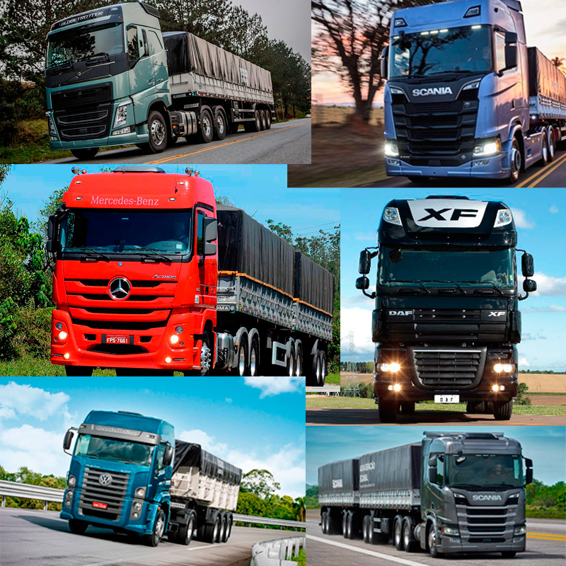

os maiores caminhoes 5 estrelas do brasil
por:miguel
seja bem vindo ao meu blog.esses são meus comentarios sobre o maiores caminhoes do brasil!!

por:miguel
seja bem vindo ao meu blog.esses são meus comentarios sobre o maiores caminhoes do brasil!!
por:miguel
Bem-vindo ao topo das estradas brasileiras! Quando o assunto é rodar o país com máximo conforto, tecnologia de ponta e potência de sobra, alguns gigantes se destacam na preferência dos caminhoneiros. Seja pela cabine espaçosa que parece uma casa ou pela eficiência que faz a diferença no bolso, hoje vamos apresentar os caminhões 5 estrelas do Brasil — os verdadeiros reis do asfalto que todo apaixonado por rodovia sonha em pilotar. Aperte o cinto e venha conferir esses gigantes!